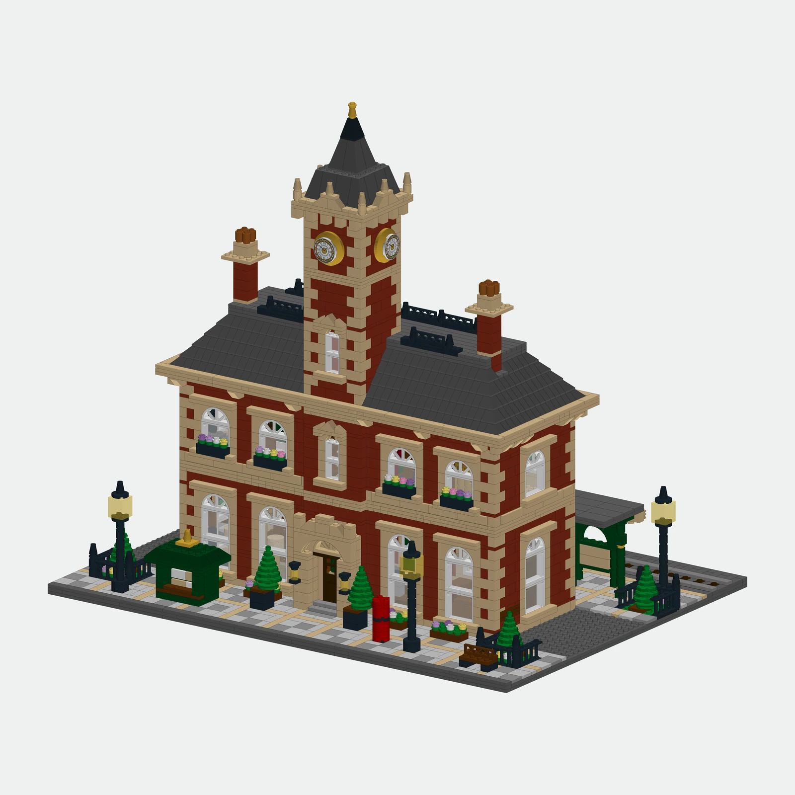
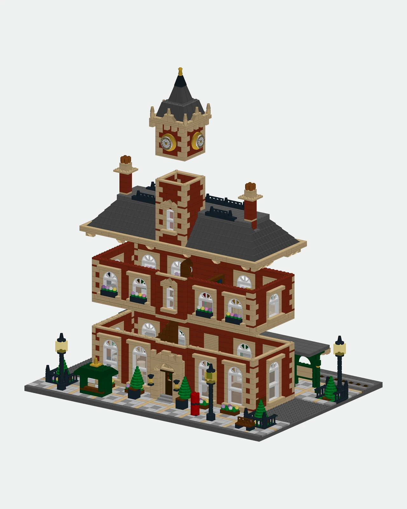
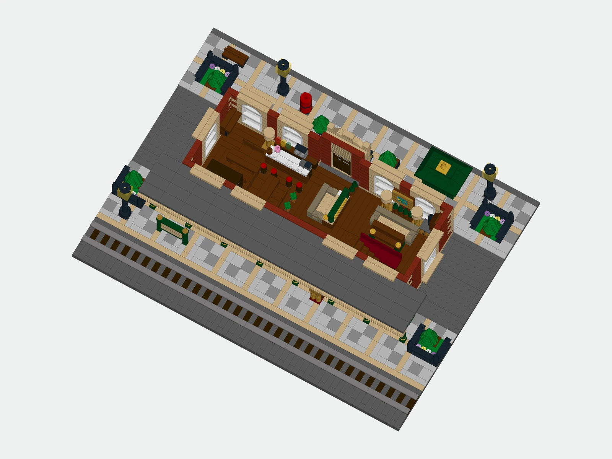
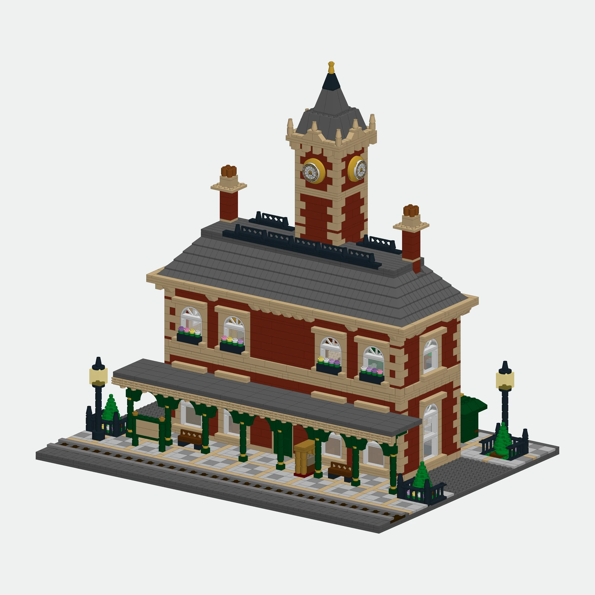
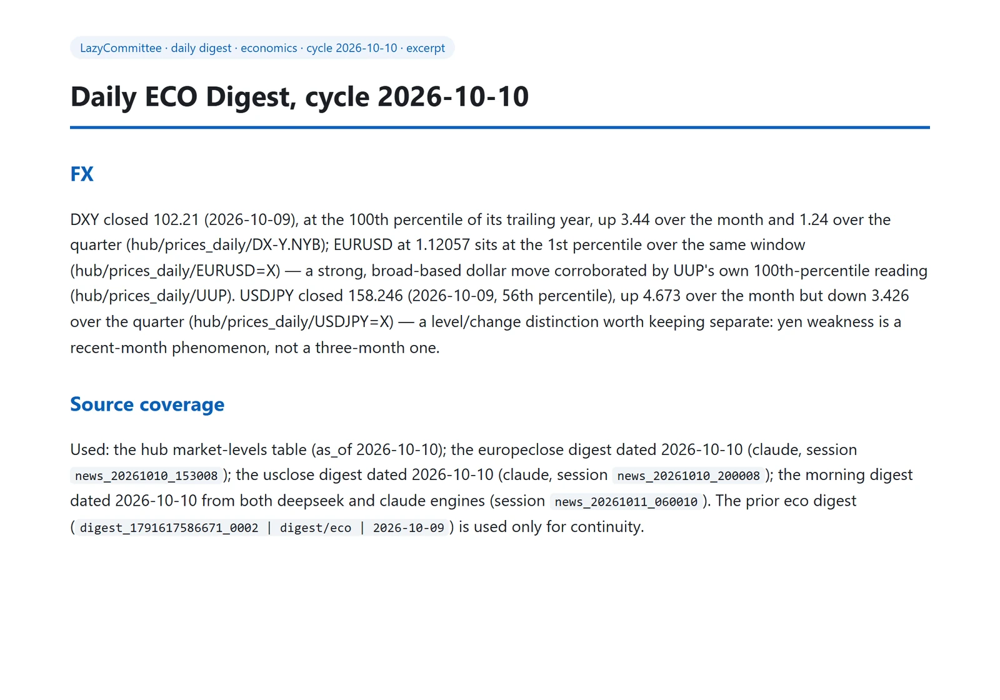
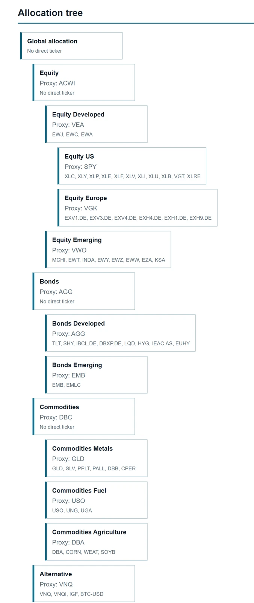
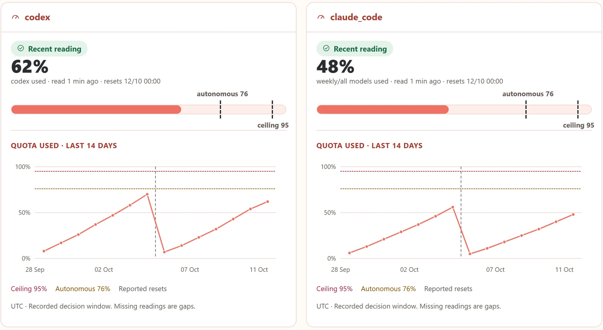
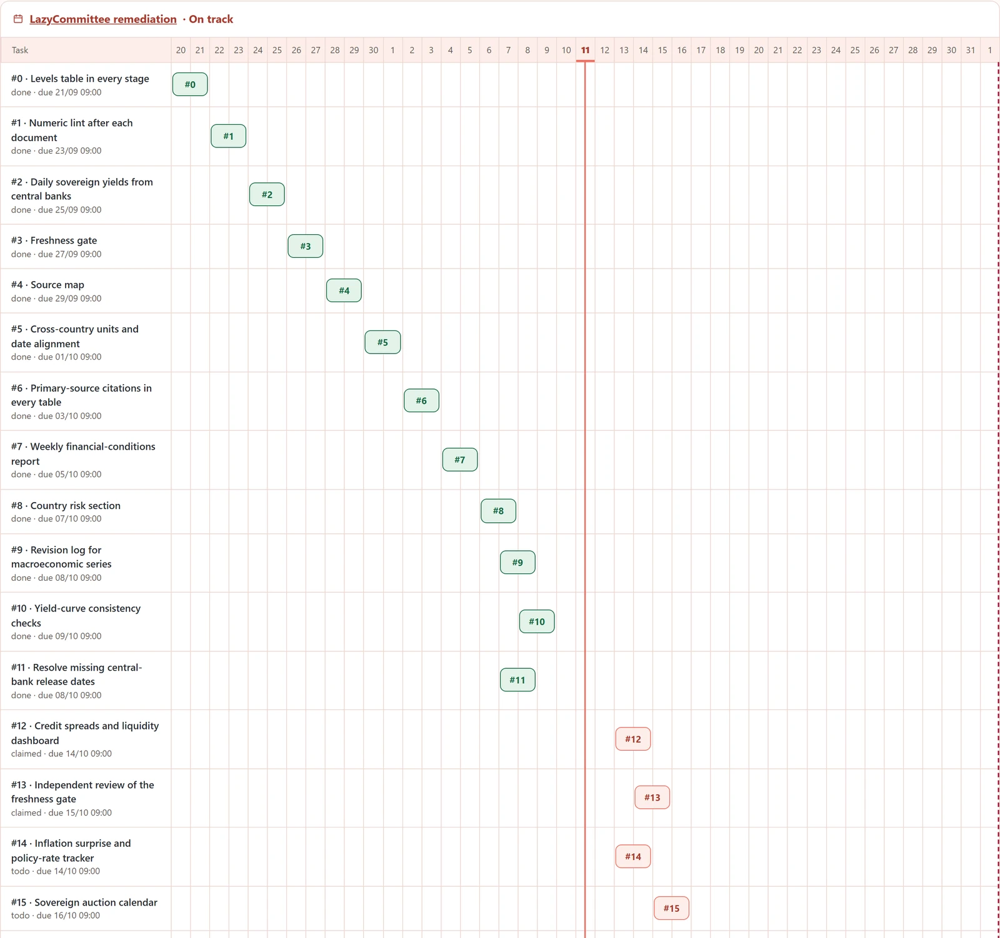

Not a graph. Not a crew. Agents that nest.
Graph frameworks such as LangGraph model a workflow as nodes and edges over a shared state, compiled into a graph. Crew frameworks such as CrewAI assign roles and tasks to a crew of agents. LazyBridge has one building block: the agent (engine + tools + state). A pipeline is an agent too, with a deterministic Plan as its engine when the order must be fixed, so you compose by putting agents inside agents.
| You model a workflow as | Main concepts | |
|---|---|---|
| LangGraph | a state graph of nodes and edges, compiled | graph, state, node, edge |
| CrewAI | a crew of agents with roles, running tasks in a process | agent, role, task, crew, process |
| LazyBridge | agents inside agents; a Plan when the order must be fixed | agent, engine, tool, plan |
Summary of each project’s documented programming model. Full comparison with sources →
One building block. Endless combinations.
LazyBridge began as a bridge between LLMs from different providers. A model rarely spots its own mistakes; a model trained differently often does. So in LazyBridge they work together and review each other’s work, catching hallucinations and errors before they reach the result.
One building block: Agent = Engine + Tools + State. Everything is a tool: a function, another agent, a whole pipeline. The engine can be anything: an API model, Claude Code or Codex on your subscription, a human, or a deterministic Plan. Every level keeps the same contract (tools, memory, verification, one Envelope out), so pipelines nest inside pipelines.
Build a team once. Reuse it as one tool in the next thing you build.
from lazybridge import (Agent, ClaudeCodeEngine, CodexEngine,
LLMEngine, Plan, Step)
# OpenAI researches (API); Claude Code writes (subscription);
# Codex, another provider, reviews the draft before it moves on.
research = Agent(name="research", engine=LLMEngine("gpt-6.1-sol"))
write = Agent(name="write", engine=ClaudeCodeEngine(),
verify=Agent(name="review", engine=CodexEngine()))
# A deterministic Plan is just another engine; agents are its tools.
report = Agent(name="report", engine=Plan(Step("research"), Step("write")),
tools=[research, write])
# The whole pipeline is now one tool for the next agent.
desk = Agent(engine=LLMEngine("claude-opus-5-5"), tools=[report])
OpenAI · API
Claude Code · subscription
⟲ reviewed by Codex
Subscription or tokens: same Agent.
Claude Code
Subscription · your Claude plan quota.
ClaudeCodeEngine()
Codex
Subscription · your ChatGPT plan quota.
CodexEngine()
API models
Per token · Anthropic, OpenAI, Google, DeepSeek, LiteLLM.
LLMEngine("model-id")
One Agent contract for every engine. Tools, memory, session and verification are LazyBridge objects, not engine features: change the engine and the rest of your pipeline stays the same. Mix them freely — a subscription agent can write while an API model reviews, or the other way round.
The login decides billing: a subscription login uses the plan's quota, an API key is billed per token.
from lazybridge import Agent, ClaudeCodeEngine, CodexEngine, LLMEngine, Memory, Session
def project_status() -> str:
"""Return this example project's status."""
return "The draft is ready for review."
state = dict(tools=[project_status], memory=Memory(), session=Session())
# Subscription agents: your plan's quota
claude = Agent(engine=ClaudeCodeEngine(), **state)
codex = Agent(engine=CodexEngine(), **state)
# API models: billed per token
opus = Agent(engine=LLMEngine("claude-opus-5-5"), **state)
gpt = Agent(engine=LLMEngine("gpt-6.1-sol"), **state)
No Python required: run the fleet from Claude Code or Codex.
Plug it into the tools your team already uses. Add the LazyTools MCP server to Claude Code (CLI, desktop or IDE) or to Codex, and your assistant gains tools to work with the other one: Claude can ask Codex to write or review code, Codex can ask Claude, and both share project plans, a deterministic Gantt and a quota brake.
Specialist agents built with LazyBridge can run on other API models too, so the fleet of agents you direct from one chat is not limited to one provider.
From one agent to a fleet.
Async code bridge
Run Claude Code and Codex jobs in the background, approve their requests, route the review to the other engine.
How it works →Fleets across projects
Run fleets of agents on many projects at once: plans, claims and acceptance evidence in one Store, a deterministic Gantt for every project.
How it works →Quota routing
Spread the fleet’s work by each engine’s remaining subscription quota; a brake stops work past the limits.
How it works →Durable sessions
Name native Claude Code and Codex conversations and resume them across processes and restarts.
How it works →Benchmark in progress: cross-provider review vs a single model, and quota routing.
LazyBridge 1.8.0 · core Stable / LazyTools 0.10.1 · Alpha
Built with LazyBridge
Working pipelines, real outputs. Three private projects put the engines and shared tools to work.
LazyBricks
Private repositoryA local 3D brick-model editor built with Three.js, FastAPI and SQLite, indexed over the full LDraw Official Parts Library.
The station below starts from a brief and a concept, then builds brick by brick: volumetric → simple → detailed, with quality reviews at each phase.
The phone interface and MCP server let a person and an agent work on the same projects and revisions.








Interested in collaborating? Write to lazybridgelabs@gmail.com.
LazyCommittee
Private repositoryAn AI investment committee built on LazyBridge with Claude Code and Codex as engines.
Scheduled daily digests become a weekly world state, asset-class views and a portfolio document.
Code computes the numbers; the LLM reads results. Freshness, numeric lint and source-map checks gate publication.




Interested in collaborating? Write to lazybridgelabs@gmail.com.
LazyCEO
Private repositoryA CEO agent that runs a fleet of agents across many projects at once, delegating to Codex and Claude Code.
Every project has a deterministic Gantt; the portfolio of running projects is tracked side by side.
A quota brake per engine routes and paces the fleet’s work; its GUI shows quota history.




Interested in collaborating? Write to lazybridgelabs@gmail.com.
Build your next pipeline.
Interested in collaborating? Write to lazybridgelabs@gmail.com.
Install into your project environment, then sign in to your local coding runtimes: